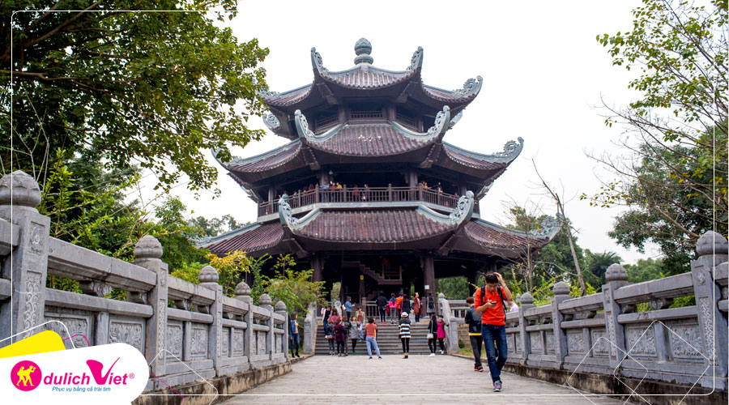

Điểm nhấn hành trình
Bái Đính - Tràng An - Đền 3 vua - Tam Thế
Lịch trình 4 ngày 4 đêm
Khởi hành 26/03; 02,09,16/04
Vận chuyển Hãng hàng không Vietjet Air
Du lịch Ninh Bình - Khu du lịch sinh thái Tràng An nằm phía Đông tỉnh Ninh Bình, có tổng diện tích gần 2000 ha, được chia làm 5 khu chức năng chính: khu bảo tồn đặc biệt (khu cố đô Hoa Lư), khu trung tâm, khu hang động, khu dịch vụ du lịch, khu tâm linh núi chùa Bái Đính. Toàn khu có 47 di tích lịch sử với nhiều hang động ẩn mình trong những núi đá vôi, các thung lũng và hệ thống sông ngầm đan xen tạo nên một không gian huyền ảo và thơ mộng. Với hàng trăm pho tượng lớn nhỏ, Bái Đính (Gia Viễn, Ninh Bình) được coi là một trong những ngôi chùa lớn nhất và có nhiều tượng nhất Việt Nam.